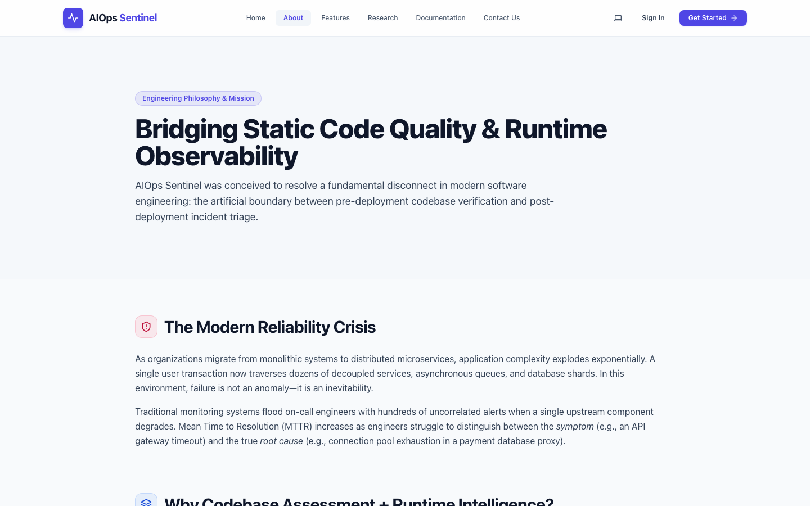

Mission & Philosophy
Engineering Philosophy & Origin
Bridging the gap between static code quality enforcement and dynamic runtime distributed reliability.

Figure 2: AIOps Sentinel Project Mission & Enterprise Design System in Light Theme.
Core Engineering Pillars
Empirical Benchmark Evaluation
Root-cause algorithms are evaluated against an internally generated synthetic cascading-failure benchmark (60 multi-service failure episodes simulating upstream propagation across call graphs). Validation against external authentic datasets (such as official RCAEval) is on the platform research roadmap.
Deterministic Code Assessment
Pre-deployment code inspection must be reproducible and safe. We rely on AST static analysis and verifiable heuristic rubrics rather than unpredictable LLM hallucinations.
Open Standards & Vendor Neutrality
Full native support for OpenTelemetry, Prometheus TSDB, Loki log streams, and W3C trace context. Zero proprietary lock-in.
Architecture Roadmap
| Capability | Phase | Status | Description |
|---|---|---|---|
| Runtime Observability | Phase 1 | Completed | OTel Collector, Prometheus metrics, Loki log streams, and Tempo distributed traces. |
| Statistical Anomaly Detectors | Phase 2 | Completed | Non-parametric MAD, online EWMA, and multi-variate Isolation Forest models. |
| Codebase Readiness Engine | Phase 3 | Completed | 10-dimension AST inspection, SARIF/HTML exports, CI/CD policy quality gates. |
| Incident Remediation & Locking | Phase 4 | Completed | PostgreSQL transactional advisory locking to prevent concurrent remediation conflicts. |
| Public SaaS & GitHub Publication | Phase 5 | Completed | High-contrast WCAG 2.2 AA design, GitHub Actions CI/CD, and GitHub Pages documentation. |